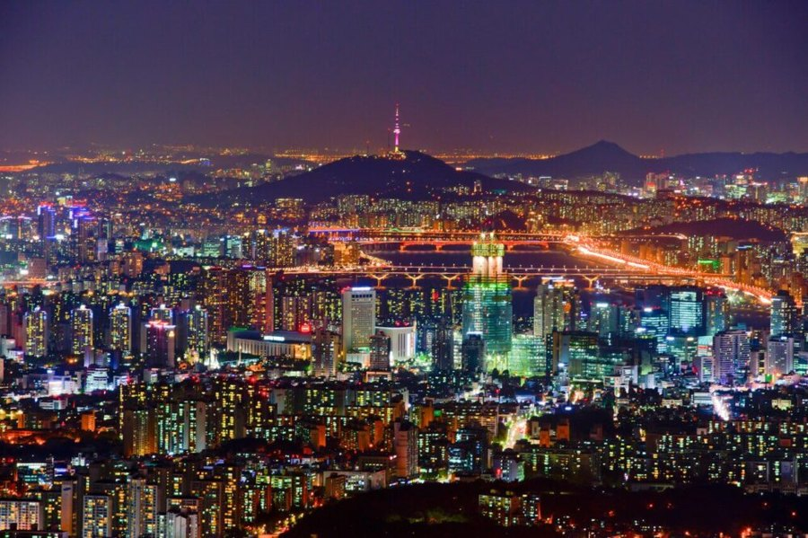
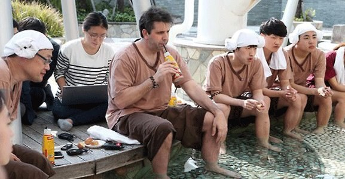

Six Days in Seoul, for Sai's Family
An arrival that asks nothing of you, four days shaped around wellness, culture, and the children, and a departure handled the same way.
Landing, and Nothing Else
The first evening is deliberately empty.
Incheon International
Your driver is waiting in the arrivals hall before you land, holding a card with your name. No searching, no queue for a taxi, no working out which exit.
To Park Hyatt Seoul
An hour or so into the city in a Mercedes-Benz limousine, with water, warm blankets, and phone chargers already in the car. Your check in is arranged in advance, so your keys are ready and you go straight up.
Yours
Nothing is planned, on purpose. After a long flight with two children, the kindest thing an itinerary can do is stop. If you would like something simple sent up to the room, or a quiet table nearby, tell me on the day and I will arrange it.
Namsan, Skincare, and Myeongdong
A morning together, an afternoon apart, an evening together again.
Up to Namsan Tower
While the city is still cool and the light is clearest, up to Namsan Tower for the view that makes Seoul feel like a single, sweeping thing.

Bibimbap
At a small Michelin Guide recommended bibimbap house near Namsan.

Myeongdong, Together Again
Straight from lunch, out along Myeongdong's shopping streets, Korean cosmetics, fashion, and street snacks at every turn, easy to wander with children since there's always something new a few steps ahead.

Facial Treatment
Two options, and we'll choose closer to the trip. A facial rooted in traditional hanbang medicine, at one of Seoul's well regarded Korean herbal skincare houses. Or a non invasive treatment for hyperpigmentation at a dermatology clinic.

Animal Cafe, for the Family
Meanwhile, the rest of the family settles into a Myeongdong animal cafe, an open afternoon of coffee, treats, and no itinerary of their own to keep to.

Cheese Dakgalbi
Dinner together, stir fried chicken pulled through a ring of melted cheese at the table. A shared, hands on meal that tends to become everyone's favorite of the whole trip.

A note from Doha, this skincare afternoon is placed before your photography day on purpose. Skin settles beautifully in the day after a treatment, so by the time you're in hanbok at the palace, you'll look and feel your very best.
Hanbok, the Palace, and the Old City
A day inside Korean tradition, from what you wear to where you walk.
Private Hanbok Fitting
Your driver brings the family to a hanbok house near the palace, where you and the children are fitted for traditional Korean dress, chosen together, colors and all.

Gyeongbokgung Palace
In hanbok, through Korea's grandest palace, dressed as part of the scene. You arrive for the changing of the guard at 10:00, then have the grounds at the quietest hour of a December morning.

A Private Photographer, for an Hour
A photographer who shoots inside the palace grounds regularly and knows exactly where the light falls at that hour, joining you for an hour while you are all in hanbok, with the edited images sent to you afterwards. Of everything across these six days, this is the one thing you cannot recreate later. It needs booking well ahead, so tell me either way and I will hold the slot.
Samgyetang
At a quiet, family run restaurant tucked into a hanok near the palace, known for one dish alone, whole ginseng chicken simmered until it falls off the bone.

Bukchon Hanok Village, and a Traditional Tea House
Narrow lanes of preserved hanok just above the palace, then a traditional tea house for sweet rice desserts and warm barley tea.

Hanwoo Korean Barbecue
Hanwoo is Korea's native breed of cattle, raised in small numbers and prized for its marbling. Dinner nearby, grilled at your own table and wrapped in lettuce leaf by leaf.

A note on why this day runs in this order. Gyeongbokgung closes at 17:00 in December, and Bukchon's residential lanes are now closed to visitors after 17:00 under the city's new rules, with a fine attached. So the palace comes before lunch and Bukchon straight after, which also places you in both for the best of the short winter light. The changing of the guard falls at 10:00, and you will be there for it.
A Day That Belongs to the Children
Almost entirely indoors, so December never becomes the reason to cut it short.
Lotte World, at Opening
Fifteen minutes from your hotel, and through the gates as they open, which is the single thing that changes this day most. The main park sits under an enormous glass dome, warm and bright whatever December is doing outside. Your driver stays with the car for the whole day, so coats, bags, and anything bought along the way go straight back to the car.
Inside the Park
Eaten where you are, without leaving and coming back. I will have looked at the options in advance and will tell you which two are worth your time, and which to walk past.
Magic Island, or the Aquarium
Magic Island sits out on the lake with the castle and the bigger rides. If the cold has had enough of you by then, the aquarium is in the same complex and entirely indoors, which makes it the easy swap on the day.
Dinner on the 81st Floor
You do not leave the building. Lotte World Tower rises straight out of the same complex, and on the 81st floor is a modern French restaurant by Yannick Alleno with the whole city laid out beneath the windows, including a pastry library the children are welcome to help themselves from. If you would rather eat Korean, the Michelin starred restaurant on the same floor is the other choice. Either way, no coats, no car, and Seoul lit up while you eat.

The Museum, Then a Slow Afternoon
One guided morning, then two ways to spend the rest of it. You can decide on the day.
The National Museum of Korea, Privately Guided
An English speaking guide who works this museum often, for a couple of hours across the collections that actually reward a visit, at a pace set by the children. Not the whole building, which would defeat the point. There is also a dedicated Children's Museum inside, hands on and reservation only, which I will book ahead if you would like it.
Close By
Something quick and warm within a few minutes, because the afternoon is where this day is really going.
A Jjimjilbang, for the Afternoon
Korea's bathhouse tradition, and the good ones are a small world in themselves: hot mineral pools, cold plunges, kiln saunas lined with salt and charcoal at different heats, sleeping rooms with heated floors, and a play area for the children. Part of the ritual is eating without getting dressed, still in the cotton robe they give you at the door: eggs baked slowly in the sauna, cold sweet rice punch, hand cut noodles.
One thing to know before you choose it. The bathing areas are separated by men and women, and inside them everyone is undressed. That is simply how it works in Korea and nobody gives it a second thought, but it is not for everyone, and I would rather tell you now than on the day. The robed floors, the saunas, and the food are all mixed and fully clothed, so you can enjoy most of it without the baths at all.

An Easy Afternoon in Seoul
If the bathhouse is not for you, we spend the afternoon somewhere gentle and warm. Ikseondong's narrow hanok lanes, now full of small cafes and tea rooms, are the easiest possible version of Seoul with two children in December: you are never more than a few steps from somewhere to sit down. Seongsudong is the other direction, quieter, with the city's best coffee and space for the children to be children. Your driver waits nearby throughout.
A Last Dinner in Seoul
One good table on the final night, chosen once I know which meal of the week you loved most. If there is a dish the children asked for twice, this is when we go back for it.
On to Japan
The trip ends the way it began, with nothing for you to arrange.
Check Out, Handled
Settled ahead of time so there is no desk to stand at. Bags down and into the car while you finish breakfast.
Airport Drop Off
Your driver takes you back out to Incheon with time held in hand, and stays until your bags are checked and you are through. Once you send me your flight time for the 23rd, I will set the pickup from the hotel around it.
What Travels With You
Private Driver
One of Seoul's most highly rated chauffeurs, in a Mercedes-Benz limousine, with you throughout your stay, day or night.
24 Hour Concierge
A real person in Korea, reachable by text or call for anything that comes up.
Restaurant Recommendations
Chosen and tailored to your family's journey as it unfolds.
Airport Pickup & Drop Off
So the trip begins and ends without a single logistic on your mind.
A Bespoke Itinerary
Designed entirely around a family traveling with two children.
Journey Briefing
Each evening, a full briefing for the next day, sent exactly how you prefer it, by text or email, with a map of every location if you'd like one.
Before I Confirm Anything
Your Flight on the 23rd
I have your arrival, 17:10 on the 18th, and the driver is set around it. I still need your departure time for Japan so I can work backwards to the hotel pickup.
Allergies and Dietary Restrictions
Your daughter's mild nut allergy is noted and carried through everything below. I still need anything for the other three of you, including whatever the children simply will not eat, since it changes which restaurants I choose.
How You Would Like Dining Handled
I can reserve every table on your behalf, or send you a shortlist each evening and let the family decide in the morning. Some families want every meal settled, others want the evenings loose.
The Photographer at the Palace
An hour inside Gyeongbokgung while you are all in hanbok, marked optional on the 20th. It books up further ahead than anything else here, so a yes or no from you is the last thing I need.
On the nut allergy. I carry it in writing, in Korean, to every kitchen we book, and confirm it with the chef before you sit down rather than at the table. Korean cooking uses pine nuts and sesame widely, often in ways a menu will not mention, so this is worth doing properly. If you would prefer to keep the reservations in your own hands, I will send you the wording to show staff.
Tell Me What You Would Change
Nothing here is fixed. Move a day, drop something, add something the children have been asking about, and I will reshape the rest around it. Every reservation, driver, and experience across these six days is mine to secure.